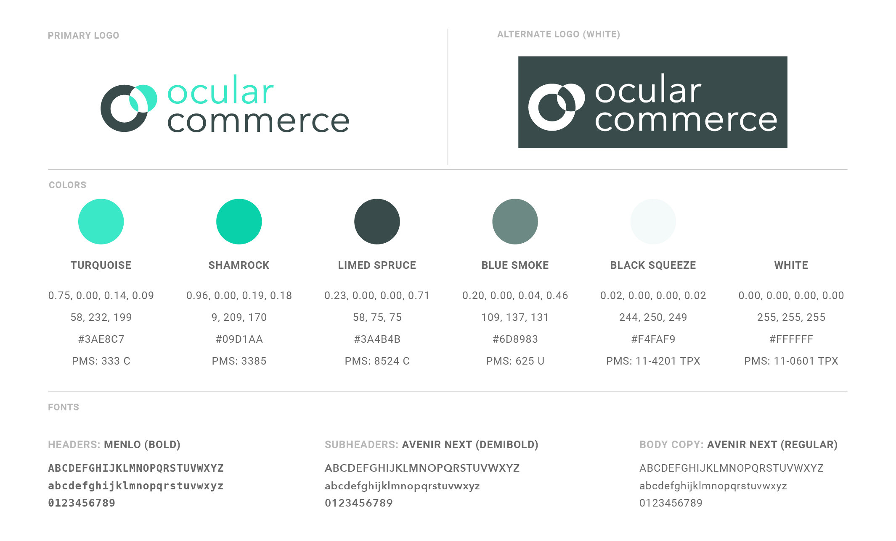

Logo & Style Guide


Style Guide - I chose monochromatic colors derived from the color teal due to their association with calmness and clarity. Since developers would likely be one of Ocular Commerce's target audiences (they would be the ones looking into and implementing the technology), I chose Menlo (a common programming font) as the typeface for headers. For subordinate elements, I chose the more basic-looking but sleek typeface, Avenir.